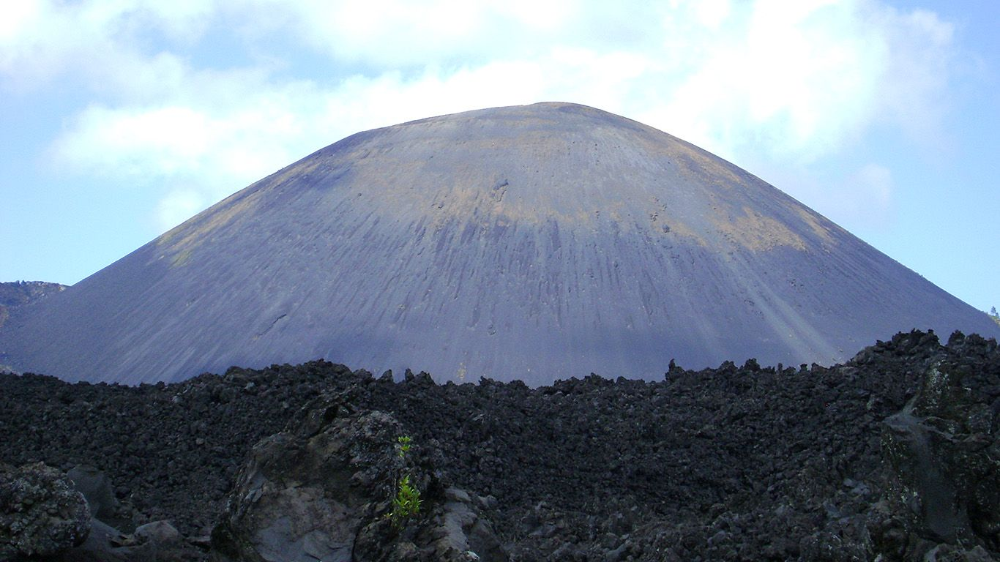
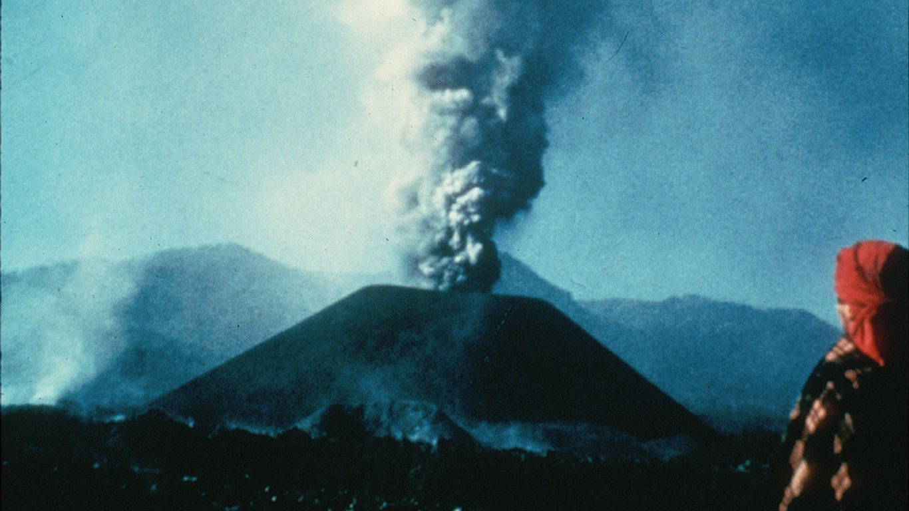
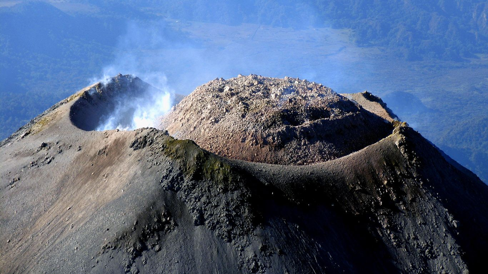

В данном разделе находятся все вулканы этой страны на нашем сайте.
Вулкан Парикутин

Парикутин (Paricutin) — самый молодой мексиканский вулкан, находящийся в центральной части страны в штате
Мичоакан, входит в Транс-мексиканский вулканический пояс. Извержения происходили стромболианского типа.
Материал извергаемого состоял из сулемы и др. материала.
Первое извержение произошло 20 февраля 1943 г. к западу от Мехико в штате Мичоакан на кукурузном поле
возле деревни Парикутин, давшей новому вулкану свое имя. До этого дня странное отверстие в земле диаметром
около 5 м на участке крестьянина Дионисио Пулидо не привлекало особого внимания. Дионисио использовал его
в качестве бездонного контейнера для мусора: сколько бы мусора он туда ни бросал, отверстие не наполнялось.
Местные жители наблюдают за извержением Парикутина
5 февраля 1943 г. жители деревни Парикутин, в 2 км от которой находилось поле Пулидо, и жители соседней
деревни Сан-Хуан-Парангарикутиро ощутили дрожание земли и услышали раздающееся из-под земли глухое
громыхание. 19 февраля за сутки произошло более 300 толчков. 20 февраля Дионисио Пулидо вместе с женой,
сыном и соседом работали на поле. Вскоре они заметили, что подземный гул усилился, а у края отверстия
образовалась трещина глубиной около 50 см. Одновременно сильно задрожала земля и затряслись растущие
неподалеку деревья.

На следующий день, вернувшись на свое поле, Дионисио обнаружил там 10-метровый конус из пепла и шлака,
в глубине которого все время происходили взрывы. К полудню он достиг высоты 50 метров, а неделю спустя
вулкан возвышался над полем уже на 150 м. Взрывы были слышны на расстоянии до 350 км, а пепел и камни
летели в небо на целый километр в высоту.
В течение года вулкан продолжал расти и достиг высоты 336 м. К тому времени он полностью покрыл кукурузное
поле Дионисио. Последние выбросы и взрывы оставили на вершине конуса воронкообразный кратер, из которого
на поверхность горы стали изливаться и стекать вниз расплавленные породы.
Лава начала изливаться из вулкана в июле 1944 г. За восемь месяцев она, преодолев 10 км, достигла селения
Сан-Хуан-Парангарикутиро. Сегодня все, что осталось от деревни, — это полуобгоревшая деревенская церковь,
колокольня которой одиноко возвышается над полем застывшей лавы.
К концу сентября остатки покинутой жителями деревни Парикутин были полностью залиты лавовым потоком.
Вскоре лава разрушила еще десять расположенных поблизости селений. Более 4000 человек были вынуждены
покинуть свои дома, но никто не погиб от лавы и пепла.
Каждый год перед пасхой жители деревни Парикутин отмечают день рождения вулкана. Они совершают
паломничество на место разрушенной деревни. Сюда приезжают туристы, чтобы увидеть вулкан и окружающий его
безжизненный ландшафт. С наблюдательного пункта в ближайшей деревне Ангахуан открывается незабываемый вид
на 25-километровое лавовое поле и высящийся за ним конус Парикутина. Колокольня церкви
Сан-Хуан-Парангарикутиро стоит среди застывшей черной лавы как доказательство могущества подземных сил.
Можно нанять проводника с лошадьми и совершить более дальнее путешествие по крутым склонам и застывшей лаве.
Нелегкий получасовой подъем — небольшая цена за потрясающий вид на кратер и окружающий его «лунный» ландшафт,
который все больше покрывается зеленью молодых растений.
Состоит из 2 конических пиков; наивысший из них (Невадо-де-Колима, 4 625 м) — потухший вулкан, большую
часть года покрыт снегом. Другой пик — действующий вулкан Колима, или Волькан-де-Фуэго-де-Колима
(«Огненный вулкан»), высотой 3 846 м, называют мексиканским Везувием. Лавы по составу близки к базальтам.
Заснеженные вершины потухших вулканов, помимо эстетического наслаждения, вызывают приятное чувство
безопасности и спокойствия. Иначе дело обстоит с действующими вулканами – огонь ужасает и притягивает
одновременно. Огненный Вулкан как раз один из наиболее активных вулканов на нашей планете. У
путешествующих по Мексике есть потрясающая возможность почувствовать сокрушительную мощь стихии,
увидеть собственными глазами извержение вулкана – выброс лавы и огненные реки, стекающие по склонам.
Небольшие размеры кратера Огненного Вулкана не позволяют большим объемам лавы накапливаться и удерживаться
внутри – вот тут и начинается леденящее душу представление со всеми чудесами натуральной пиротехники.
Один из маршрутов, ведущих к вулкану, начинается в городе Колима, далее через соседний город Комала
(Comala), через Сучитлан (Suchitlán) и озеро Ла Мария, и, наконец, через поселение Ла Йербабуэна
(La Yerbabuena) – это уже почти у подножия вулкана. Само приближение к нему завораживает: на протяжении
всего пути вулкан очень отчетливо виден, и можно наслаждаться разнообразием пейзажей с единственной
постоянной деталью – на заднем плане незыблемо возвышается великолепный Огненный Вулкан.

Огненный Вулкан находится в штате Колима, в центре западной части Мексики. Вместе с соседним потухшим
вулканом Снежная Вершина Колимы (Nevado de Colima) образует вулканический комплекс, относящийся к
Мексиканскому вулканическому поясу.
На этой территории расположены некоторые города штата Колима (Куаутемок и Комала) и штата Халиско
(Тукспан, Сапотитлан и Тонила). Огненный Вулкан находится в 48 км на север от Колима на границе со
штатом Халиско; занимает восьмое место среди самых высоких вершин в Мексике (3860 м); ближайшее к вулкану
поселение - Ла Йербабуэна, расположено в 8 км от кратера вулкана.
Климат: жаркий и влажный; сезон дождей – с мая по октябрь. Сюда можно приезжать в любое время года,
исключая, конечно, периоды наибольшей вулканической активности.
На заметку: в городе Комала на улице Ла Калье Прогресо (la calle Progreso), в доме № 102 живет дон Матиас
Корья (Matías Coria) – это местная знаменитость, фотограф. Свои работы он выставляет на углу центрального
парка Комалы – здесь можно посмотреть и купить фотографии Огненного и других вулканов, сделанные им в разные
годы. Фотографии на любой вкус и темперамент: от романтичных, с чудесным озером на первом плане, до
неистовых – с вулканами, извергающими огонь во всех направлениях. Последнее сильное извержение было
зафиксировано 8 июня 2005 года, выброшенный пепел поднялся на высоту 5 км, что заставило власти эвакуировать
людей из расположенных неподалёку деревень.
Вулкан Орисаба (Pico de Orizaba), или Ситлальтепетль (Cītlaltepētl) («звездная гора» на языке
ацтеков) - стратовулкан, высшая точка Мексики и третья вершина Северной Америке после Денали и горы Логан.
Высота Орисабы в разных источниках варьируется, но чаще всего указывается высота 5636 метров. В настоящее
время вулкан спокоен, но в предыдущие столетия здесь было несколько извержений. Последнее извержение Орисабы
было зафиксировано в 19-м веке.
Первое восхождение на вершину Орисабы было совершено в 1838 году французской экспедицией в составе Анри
Галеотти, Аугусто Гисбрегт и др. По другой версии первое восхождение совершили в 1848 году Мейнард и Рейнольдс.
Сложный рельеф, значительная высота над уровнем моря, сильные ветра – все это обусловило наличие на вулкане
нескольких климатических зон. Если у подножия восточной стороны вулкана можно наблюдать тропическую
растительность, то на более высоких уровнях растительность больше похожа на альпийскую.
Самое популярное время для восхождения – в декабре, во время Рождества. Сухой сезон длится с ноября по апрель.
Начиная с апреля выпадают осадки в виде дождя и снега, но вершина остается доступной для восхождения.
Рекомендуется запланировать восхождение на первую половину дня, так как после полудня обычно сгущается
облачность. Обычно на восхождение уходит 6-10 часов и еще 3-4 часа на спуск
Технически маршрут восхождения на Орисабу несложен (категория 2A), подъем и спуск занимают в среднем 10-12
часов. Начинать подъем лучше ночью, чтобы достичь вершины до полудня. Подъем начинается от приюта Piedra Grande.
Первая часть маршрута (1.5-2 часа) проходит по каменистой тропе крутизной 20-40 градусов. Вторая (30 мин-1
час) – по тропе со снегом и льдом между камнями и скалами. Третья часть (около 4 часов) проходит по открытому
ледовому полю без трещин и каких-либо препятствий. В ноябре это обычно плотный снег, с февраля бывает лед.
Основная сложность – плотно утрамбованный снег, са.
Нужно заранее позаботиться о питьевой воде. Примерно в 500 метрах от приюта есть небольшой ручей, но воду
необходимо обеззараживать или кипятить. Разумнее всего будет привезти в приют воду с собой. Воду без проблем
можно приобрести в Тлачичуке в бутылях по 20 литров. Если вы разобьете лагерь на высоте 4900, то воду можно
добывать из снега и ль


 Вулкан Парикутин на Гугл карте
Вулкан Парикутин на Гугл карте